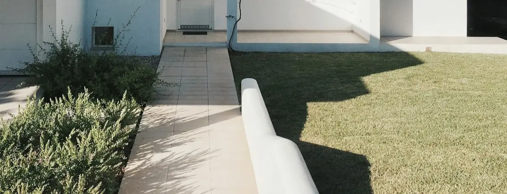

Boundaries
Fence Installation Across South Florida
Decide what the fence is for before you decide what it is made of. Material, height, layout and approvals all follow from that one answer.
Nearly every fence conversation starts in the wrong place
It starts with a material. Vinyl or aluminum, six feet or four, white or bronze. Those are real decisions and they come second, because a fence is a functional object and the function is not always obvious even to the person who wants one.
Blocking a specific view from a specific window is a different brief from marking where one property ends. Keeping a dog in is a different brief from keeping the wind off a seating area. And a barrier around water is different from all of them, because that one is governed rather than chosen — a point this page returns to deliberately, and does not gloss over.
Name the job first. Everything downstream — the material, the height, where the line runs, what has to be approved before anyone digs — gets easier once it is settled, and cheaper than discovering the mismatch after installation.
Start here
What is this fence actually for?
Most properties want two of these at once. Knowing which two rules out most of the catalogue immediately.
Screening a view
Not general privacy — one particular sightline, from a neighbour's upper window to your seating area, or from the street into the yard. Solve it by identifying the line and its height, which sometimes needs less fence than expected in a shorter run.
Marking the boundary
A visible, agreed line that does not need to obstruct anything. Open styles suit this, they keep the property feeling larger, and they are the least contentious with the neighbour on the other side.
Containing pets and children
Here the gaps, the ground clearance and the gate hardware matter far more than the panel. A dog that can dig under or squeeze through has beaten a fence that looks perfectly adequate.
Enclosing a pool area
A category of its own, governed by requirements rather than preference. Read the pool-area section below before comparing products, because it constrains the choice.
Hiding the working parts
Pool equipment, bins, a compressor, storage. Usually a short run rather than a perimeter, and often the highest-value fence on a property for how little of it there is.
Managing wind and exposure
A solid panel stops wind and takes the whole load; an open one lets it through and takes less. Which you want depends on whether the seating area is worth sheltering, and that trade-off gets discussed on site.
Options
Four materials, judged by what they are good at
Every one of these is the right answer somewhere, and every one is the wrong answer somewhere else. What follows is general material behaviour, not a claim about a particular manufacturer's product.
| Material | Where it fits | What to weigh against it |
|---|---|---|
| Vinyl | Full-height privacy runs where an unbroken, low-upkeep face is wanted. Does not need painting or staining, and washes down. | A solid panel is a sail, so posts and footings carry the whole load and are not the place to economise. Colour choice is limited, and a damaged section is replaced rather than repaired. |
| Aluminum | Open picket runs for boundaries, garden divisions and enclosures where the view matters. Powder-coated, corrosion-resistant compared with steel, and light on its posts. | It defines rather than screens, so it is the wrong tool if privacy is the brief. Hardware and finish specification matter more the closer the property sits to the coast. |
| Wood | Privacy and screening where the appearance of timber is the point, including board-on-board and horizontal-slat layouts that suit contemporary houses. | It is the most maintenance-hungry option here. Sun, humidity and rain move it, weather it and eventually take it, so budget for finishing and for periodic attention. |
| Chain link | Enclosing large areas economically, securing a utility or service zone, and back-of-property runs where appearance is secondary to function. | No privacy, and it reads as utility fencing wherever it goes. Vinyl coating and slat inserts soften it a little; neither turns it into a screening product. |
What we will not tell you
We do not publish wind ratings, product approval numbers, service lives or warranty terms for fencing on this site. Those attach to a specific product, in a specific configuration, installed a specific way — and quoting them generically is how homeowners end up with expectations no installer intends to meet. Ask us for the documentation for what is actually being proposed on your property, and read it before you sign.
The common brief
Privacy, and what it actually takes
Privacy is a geometry problem
Whether a fence screens you depends on three things: how tall it is, how far you are sitting from it, and how high the eye looking at you is. Someone standing in the next yard is screened by far less fence than someone on a second-floor balcony, and no legal height of fence solves the balcony. Working that out on site, from where you actually sit, is more useful than defaulting to the tallest panel available.
Full screen or partial
A solid panel gives complete visual separation and complete wind blockage. Board-on-board and horizontal-slat layouts give near-full screening with some air movement and a softer look. A louvre or spaced arrangement obscures at an angle while staying open head-on. They are different products with different prices, and the honest way to choose is to stand where you will sit.
Screening one thing beats fencing everything
Frequently the whole requirement is a short run in one place — beside the terrace, along one property line, behind the seating. A targeted panel does the work of a perimeter for a fraction of the cost, and leaves the rest of the yard open.
Two sides to every fence
Your neighbour looks at the back of what you install, and some communities have a view on which side faces out. It is worth a conversation with them before the work rather than after, and worth checking whether an association has a rule about it.

Read this one carefully
Fencing around a pool area
The one part of this subject where preference does not govern, and where we are deliberately more careful about what we claim.
A fence is not automatically a pool barrier
This is the sentence to take away from the page. Barriers around residential swimming pools are subject to requirements that an ordinary fence does not necessarily meet — requirements concerned with things such as height, what a small child can climb or pass through, and how gates behave when nobody is holding them. A perfectly good privacy fence, or a boundary picket you like the look of, may satisfy none of that. Anyone who tells you a product is pool-code compliant without looking at your property and the rules that govern it is guessing on your behalf.
What actually applies is property-specific
Whether a barrier is required, what form it has to take, how it interacts with doors and windows facing the pool, and which authority reviews it are all decided by where your property sits and by the authority having jurisdiction over it. We do not publish those requirements here, because a rule reproduced on a website is a rule that may be out of date or may never have applied to your address.
How we handle it
Requirements for your specific project are confirmed with the authority that reviews the work before anything is proposed for construction, and the fence is designed and built to what that confirmation says. If a pool is being built or remodelled at the same time, the barrier is coordinated with that programme rather than added afterwards.
Beyond the barrier
A barrier is one layer of protection around water and never the only one. Supervision is the layer that matters most, and no fence, gate or hardware replaces it.
What we will confirm, and when
Before proposing: whether a barrier is required for your property, what the reviewing authority requires it to do, and how that shapes the material and layout.
Before building: that the design as drawn matches what was confirmed, including the gates and their hardware.
Never: a blanket statement that a product or a height complies. That is decided for your property, by the authority that reviews it, on the facts of your project.

Approvals
Codes, permits and associations
Three separate tracks, frequently confused with one another, and all of them property-specific.
The municipality and county
Local regulation is what governs height, placement relative to property lines, what is allowed in a front yard versus a rear yard, visibility at corners and driveways, and whether a permit is needed at all. These differ between neighbouring cities. We confirm what applies at your address as part of the project rather than working from a general rule.
The permit process
Where a permit is required, there is a submittal, a review and usually an inspection. What has to be submitted varies, which is why the survey question below matters. We handle the process for the work we carry out.
The association
If your property is governed by an HOA, its approval is separate from the municipal one and often takes longer. Associations regularly have views on material, colour, height and style that are narrower than the local rules, and they are entitled to. Bring the guidelines to the consultation if you have them.
Why we do not publish the requirements
Naming a height limit or a permit rule on a page like this would be convenient and occasionally wrong — rules change, and they differ by jurisdiction and by zoning. We would rather confirm your project's requirements and tell you what they are than have you plan around something that does not apply.
Requirements are confirmed for your project
Code, permit and approval requirements should always be confirmed for the specific property before a fence is designed or ordered — by us as part of the work, and independently by you if you would like to. What applies to a neighbour's fence, or to one you saw two streets away, is not proof of what applies to yours.
On site
Lines, posts and ground conditions
The line comes from the survey, not from the old fence. Existing fences, hedges and driveway edges are often a little off the boundary, and rebuilding along an inherited error can create a dispute with a neighbour years later. Where the line is uncertain, establishing it properly is worth doing before posts are set rather than after.
Easements constrain what can be built and where. Where one crosses the property, what may be placed over it can be limited and access has to be preserved. It is one of the first things worth raising, because it can change the layout.
Posts are the fence. Panels get all the attention and posts do all the work. Depth, footing, spacing and the fixings between post and panel are what decide whether a run stays plumb and straight through storm season. Where a fence has failed, it is usually the posts that went first — which is also why replacing panels onto old posts is rarely the saving it appears to be.
The ground has a say. Slope means stepping panels or raking them, and the two look completely different once built. Rock, roots, existing slabs and buried services all affect where a post can physically go, and a mature tree on the line is a constraint to design around rather than through.
Gates deserve their own thought. They are the part that moves, so they are the part that wears. Width for what has to pass through — a mower, a wheelbarrow, equipment for future work in the back yard — swing direction, and hardware chosen for the job the gate is doing.
How it runs
From walking the line to hanging the gate
-
Walk the line together
The purpose of the fence, the runs it needs, where the boundary actually falls, the ground conditions, existing trees and structures, and where gates have to be for the yard to keep working.
-
Confirm what governs it
What the municipality requires at this address, whether a permit is needed, whether a pool barrier is in scope, and what any association has to approve. Established before material and height are fixed, because it can change both.
-
Specify and propose
Material, style, height, post and footing detail, gate positions, hardware and extent, set out in writing with the approvals that have to be obtained before work begins.
-
Approvals and utility locating
Submittals made and answers received, and underground utilities located before any post hole is dug. This is the step that most affects the schedule and the one least worth rushing.
-
Set out, remove, dig
Line and post positions marked and agreed on the ground, any existing fence taken down and removed, then post holes dug to the depth the design calls for.
-
Posts, panels, gates, walkthrough
Posts set and left to cure before load is applied, panels or fabric installed to line and level, gates hung and adjusted so they latch cleanly, then the site cleared and the finished run walked with you.
Afterwards
What each material asks of you
Upkeep is part of the choice, not an afterthought to it — so it is worth knowing before the material is fixed.
Vinyl
Washing down, and checking that posts have stayed plumb after heavy weather. Damage is dealt with by replacing a section rather than repairing it.
Aluminum
Rinsing, and keeping an eye on the coating and the fixings, particularly nearer the coast where salt in the air reaches everything.
Wood
The most attentive of the four. Finishing on a cycle, watching for movement and rot at ground contact, and replacing individual boards as they go rather than waiting for a run to fail.
Chain link
Very little. Tension, the condition of the fabric where it meets posts, and gate hardware are the things worth periodic attention.
Gates, on any material
The moving part wears fastest. Hinges and latches want checking and adjusting, especially on a gate that is part of an enclosure whose purpose is keeping something in or out.
After a storm
Walk the run. A post that has taken a shove will show as a lean before it shows as a failure, and dealing with it then is a repair rather than a replacement.

Why Arco
Careful about what we claim
No blanket compliance claims
We do not tell you a fence meets pool barrier requirements because of what it is made of. We confirm what your property requires with the authority that reviews it, and build to that.
Function before catalogue
The first conversation is about what the fence has to do. It regularly ends with a shorter run, a different material, or less fence than you came in expecting.
Licensed and insured
We hold Florida Certified Building Contractor licence CBC1269393, and we would encourage you to verify it — along with insurance — for any contractor proposing to build along your boundary.
Where we work
Fence installation across South Florida
Broward, Miami-Dade and Palm Beach counties, working from Davie. Requirements differ city by city, which is part of why they are confirmed per project.
Common questions
Fencing questions we are asked most
Does a new fence automatically satisfy pool barrier requirements?
No, and treating it as though it does is the most dangerous assumption a homeowner can make on this subject. Barriers around residential pools are governed by requirements covering things such as height, what a child can climb or squeeze through, and how gates latch and swing — and a fence built purely to mark a boundary or provide privacy may satisfy none of them. Whether a barrier is required at all, and what it must do, depends on the property and on the authority having jurisdiction over it. We confirm what applies to your project with that authority before anything is built, rather than telling you in advance that a product qualifies.
Which fence material should I choose?
Start from the job rather than the catalogue. Full visual privacy points toward a solid vinyl or a board-on-board wood panel. Marking a boundary while keeping a view and letting wind through points toward aluminum picket. Enclosing a large area at the lowest cost, or a utility area at the back of a property, is where chain link is honest and sensible. Once the function is settled, the choice narrows to two options at most, and appearance, upkeep and exposure decide between them.
Do I need a permit to install a fence?
Requirements are set by the municipality and the county your property sits in, and they vary. Height limits, how those limits differ between a front and a rear yard, corner visibility, setbacks and what documentation a submittal needs are all property-specific. Rather than publish a rule that may not apply to you, we confirm what your address requires as part of the project and handle the process. If your property is in an association, that approval is a separate track and usually the longer one.
Where exactly can the fence be built?
On your property, and knowing where that line falls is a survey question rather than a matter of where the old fence stood. Existing fences, hedges and driveways are commonly a little off the line, and inheriting an error can create a dispute with a neighbour years later. Easements are the other constraint worth raising early — where one crosses the property, what can be built over it may be limited, and utility access has to be preserved.
How does South Florida weather affect a fence?
Sun, humidity, driving rain and salt-laden air near the coast all act on the material continuously, and storm season acts on the structure. That is why the parts you cannot see matter: post depth, footing, spacing and the fixings used. A panel is only ever as good as what is holding it up. Material behaviour differs too — untreated wood weathers and moves, and metal components closer to the coast need hardware and finishes chosen with that exposure in mind.
Can you replace a fence and keep the existing posts?
Sometimes, and it is worth assessing rather than assuming. Posts that are sound, plumb, correctly spaced for the new panels and set in serviceable footings can occasionally be reused. Far more often the posts are the reason the fence is being replaced — they are what fails first. Where we find that, reusing them buys a shorter life for a small saving, and we would rather say so at the assessment than build onto something that is already going.
Tell us what the fence has to do
We will walk the line with you, confirm what your property's requirements actually are, and propose the shortest, simplest fence that does the job properly.